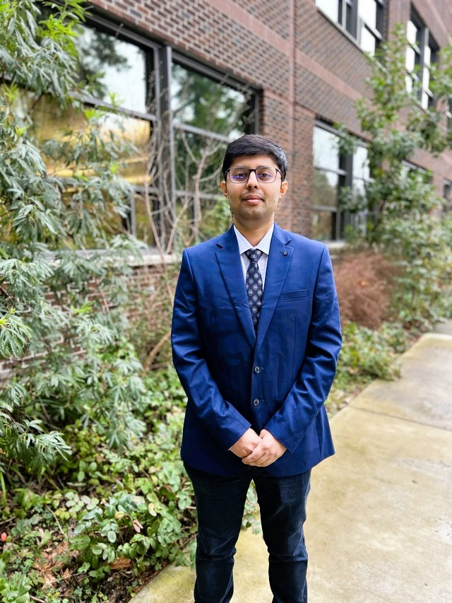

About

Hi Everyone
I'm Arsheya Raj, a 2024 Master's graduate in Computer Science & Software Engineering from the University of Washington -
School of STEM (Bothell), seeking a full-time Software Development Engineer (SDE) role. I also hold a B.E. in
Information Technology from BIT Mesra, with strong experience in backend systems, distributed applications, and scalable
software development.
In 2025, I served as CTO at Vaccine Genie, Community Family and Internal Medicine, leading the design and
development of production-grade healthcare software systems. I'm currently a Co-founder at Vaccine Genie, contributing
to system architecture, backend services, and application scalability.
Previously, I worked as a Business Technology Analyst at ZS Associates (2018 - 2019), gaining hands-on experience with
AWS, GCP, databases, and data-driven systems (Reltio). I've also built and shipped production applications using React Native and
Swift as a freelance developer.
Open to Software Development Engineer (SDE), Data Engineer, Machine Learning Engineer, and Cloud Engineer opportunities focused on building reliable, scalable, and high-performance
systems.